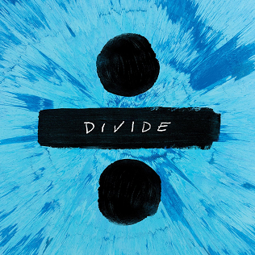
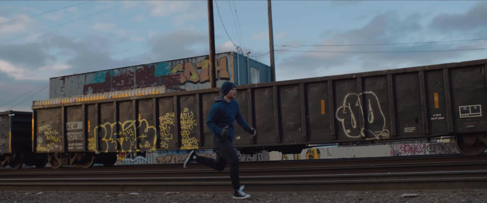

How a song written for another artist became Ed Sheeran's biggest global hit.
Artist: Ed Sheeran
Album: ÷ (Divide)
Release Date: January 6, 2017
Genre: Pop / Tropical House
Length: 3:53
Producers: Steve Mac, Ed Sheeran

"Shape of You" was released in January 2017 as the lead single for Ed Sheeran's third album, Divide. Interestingly, Ed Sheeran did not plan to sing the song himself. He wrote it with producer Steve Mac and Johnny McDaid to give it to Rihanna or another pop singer. However, while recording the demo, his record label heard it and convinced him to keep the song for his own album.
Unlike Ed Sheeran's classic slow guitar ballads, "Shape of You" is a mid-tempo dance-pop song. The main melody is played on a marimba (a wooden percussion instrument), which makes the song recognizable within the first two seconds. To keep the rhythm simple, Sheeran tapped on the body of his acoustic guitar like a drum and recorded multiple layers of his own voice for the chorus.
The lyrics tell a simple and realistic love story. Instead of meeting at an expensive VIP nightclub, the story starts at a local bar where the singer is having drinks with his friends. He meets a girl, they go out for casual dinner dates, eat cheap takeout food, and talk for hours in the back of a taxi. It focuses on everyday romance and physical attraction.
The song quickly became a historic streaming hit:
Chart Success: It hit #1 in 34 countries at the same time. It stayed at #1
for 12 weeks in the US and 14 weeks in the UK.
Spotify History: It was the first song in history to reach 2 billion and
then 3 billion streams on Spotify.
Best-Selling Track: It was the #1 best-selling song in the world in 2017.
Grammy Award: The song won the Grammy Award for "Best Pop Solo
Performance" in 2018.
The music video was filmed in Seattle and directed by Jason Koenig. Instead of showing a bar or a party, the video is about boxing. Ed Sheeran plays an amateur boxer who trains hard every day and falls in love with a female boxer at his gym (played by dancer Jennie Pegouskie). At the end of the video, there is a funny twist where Sheeran wears a giant inflatable suit and wrestles a real sumo wrestler.
